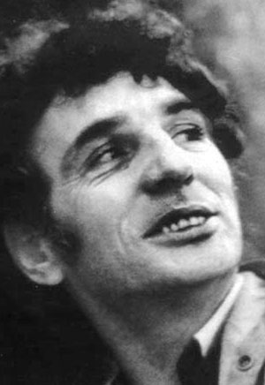
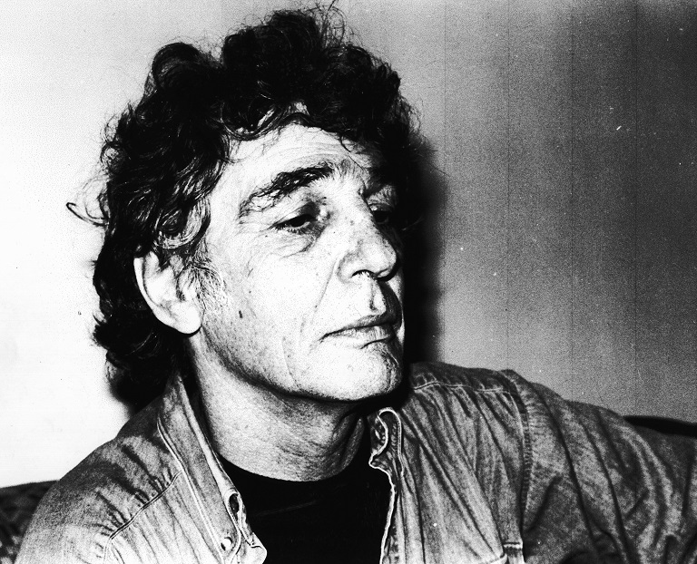
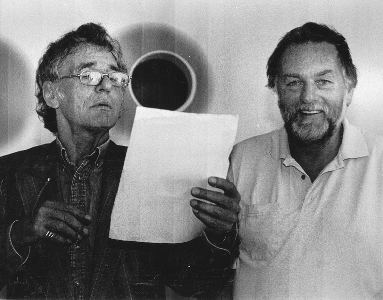
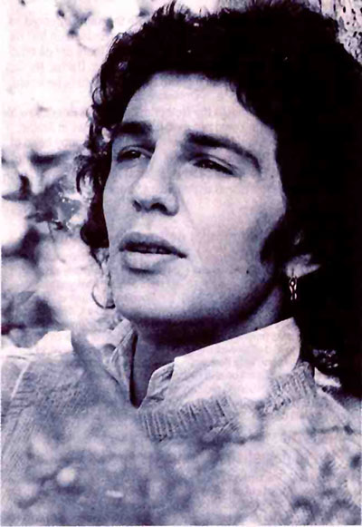
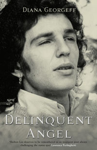

|
Shelton Lea |
||||||||
 |

Shelton Lea was born in 1946 in Fitzroy and found himself adopted into Toorak. At twelve he ran away from home and Carey Grammar and lived on the streets, stealing to survive. He did time in various reform schools. At sixteen he was walked into Pentridge’s C Division. Inside jails he wrote love poems and letters for tobacco. He travelled and forged Aboriginal bonds beginning his life-long commitment to write about Australia’s black and white troubles. His 2004 interview on ABC television’s Stateline was influential in raising the minimum age for jailing teenagers. His first collection appeared in 1962. In the 1960s he lived in Kings Cross, later moving to Melbourne, where as part of the Heide set he was associated with Barrett Reid on Overland. Prominent as a reader and mentor, he regularly performed his works, sometimes with a jazz group. He received two Australia Council grants and Arts Victoria funding to read his work throughout rural Victoria and also read at festivals and in pubs, schools, prisons, universities and under trees across the nation. His bookshop DeHavillands on Wellington in Melbourne trades in fine books and collectors’ editions, specialising in Australian poetry. His Eaglemont Press published six titles, most recently Raffaella Torresan’s Melbourne Poets Live, 2003. Shelton Lea died of cancer in May 2005 shortly after the launch of Nebuchadnezzar, his ninth book.  Shelton Lea, 1998 (photo: Raffaella Torrenson)  Shelton Lea and Barry Dickins, 2005 (photo: Raffaella Torrenson) He was widely anthologized. His previous works included: The Asmodeus Poems (1962), Corners In Cans (Still Earth Press, 1969), Chrysalis Limited Edition, Illustrated by Joel Elenberg (National Press, 1972), The Paradise Poems (Seahorse Publications, 1973), Chockablock With Dawn (UQP Makar Press Gargoyle Poets 13, 1975), Palatine Madonna (Outback Press, 1979), Poems From A Peach Melba Hat (Abalone Press, 1985), The Love Poems (Eaglemont Books, 1993) and Totems (Eaglemont Books, 2003) Diana Georgeff has written a biography of Lea, Delinquent Angel (Random House, 2007) (see Alan Wearne’s review in The Sydney Morning Herald).. Obituary - Shelton Lea 1946-2005 Kevin Pearson Overland, No. 180, Spring 2005  ‘When I was wide-eyed and entering the poetry scene back in the late 1970s it was Shelton... who gave me time and encouragement. He was luminous and passionate and a very fine poet.’ That email from the poet and novelist Anthony Lawrence was one of many received by Black Pepper after Shelton died eight days after his heroic appearance at his last book launch. It is how many remember him as a poet and as a barracker for poets. Shelton Lea was born in 1946 in Fitzroy and adopted out into Toorak. He fled from the toffy suburb and Carey Grammar aged 12 and into a troubled youth on the streets and survival by theft. He was in Pentridge C Division by 16. Writing for fellow prisoners became one of the schooling grounds for his art. He travelled the country and forged his first Aboriginal bonds, leading to his informed championing of their causes, and those of the dispossessed generally, in his work. Psychologically, his adoption made him feel at one with them. His street education gave him his characters and their stories, though it should not be forgotton that he was also well read, hence the range of classical references in his work. After a stint in Kings Cross in the early sixties, he returned to Melbourne where he was associated with the Heide group of artists and poets. Barrett Reid encouraged his poetry and through Reid Shelton developed an ongoing link with Overland. He published nine collections, the first in 1962, the last in May this year. They are The Asmodeus Poems (1962), Corners In Cans (1969), Chrysalis (1972), The Paradise Poems (1973), Chockablock With Dawn (1975), Palatine Madonna (1979), Poems From A Peach Melba Hat (1985), The Love Poems (1993) and Nebuchadnezzar. Most of these were published during his influential Melbourne years. During that time he was an instigator and organiser of important poetry readings and an ardent reader himself. He received two Australia Council grants and Arts Victoria funding to read his works throughout rural Victoria and read in pubs, at festivals, schools, prisons, universities and under trees throughout the land. (I first met him on one such excursion to Adelaide in the early eighties where, at a reading I had organised, he and Eric Beach read on a boat on the Torrens.) His compelling voice, his swagger, that silver-topped cane; in short, his identity as a poet, were at the centre of his charm. He led a restless life without ever losing his innate commitment to his poetry. Fourteen and a quarter years ago he met Dr Leith Woodgate who became his partner. During those years he established Eaglemont Books which published seven poetry titles, the last being Raffaella Torresan’s photographic essays Melbourne Poets Live 2003. He also ran a bookshop by that name until he moved and it became DeHavillands on Wellington, specialising in Australian poetry and collectors’ editions. Shelton and Black Pepper had for more than eighteen months planned to bring out what was to become his last book. He would never deliver me the manuscript. Two and a half months ago we met by chance in Brunswick Street. Drinking in The Bar With No Name, he told me of his diagnosis with cancer. Gesticulating with his characteristic long joint he was upbeat about the book. The manuscript was about to appear. Leith kept him up to the mark on delivery. That book is dedicated to her. It is his most comprehensive collection, in that it covers most aspects of his life and concerns. He is survived by Leith, two sons and two daughters from previous relationships. Many friends mourn him. There are strong and fine poems throughout his collections. He deserves a broad Selected, a task made awkward by the Literature Board underwriting only living authors. As another poet and novelist, Peter Murk remarked: ‘58! - it’s teenage these days’. Memoir - Vale, Shelton Lea Michael Sharkey (poet) Overland, No. 180, Spring 2005 Shelton encouraged others, who were often first-timers, from the sidelines, calling out ‘Tell it to them’ and ‘Beautiful’. Young and old poets thrived in that atmosphere. I lament the death of Shelton Lea. He deserves a poetic eulogy, and I wonder who’ll write one up to his deserving. I heard about Shelton’s death three days after the event, and the news rocked me. We became compadres, as he might have said, from the time we encountered each other in 1965 in the Royal George Hotel in Sussex Street, Sydney, two blocks away from where I worked in a publisher’s office in Clarence Street. He introduced me to a world that I inhabited only in mind: a bohemia where everything that was anathema to the privately educated, square world we emerged from had its home. I occupied a series of fly-by-night tenements in alleys and main streets of the Cross and lived, like Shelton, a step away from the vagrancy laws then in operation in New South Wales. We drank and talked in the George of poetry and jazz, and talked in the streets of the Cross, where he and his brother Bretton kept a stately distance from the straights and squares who came to visit at weekends - the suburban night-trippers who sought drugs, sex from the ladies of the night, and quasi-sex from the strippers who saw them coming. Shelton and I joked that we were ‘gentlemen of the road, just like the women who were ladies of the night’. Shelton knew the gambling haunts of the bent coppers, the fly-by-night cafe-owners like the bigamously married Black Cat proprietor, the coppers’ narks, the spivs, the hoons, the gunmen, the speed freaks and the backyard manufacturers of lysergic acid, who became our friends or desperates-in-common. I owe a lot to Shelton, who was even then called Shelly - partly derived from his name and partly from his self-declared profession as poet, when he wasn’t pulling off spectacular raids as a cat-burglar of select high-rise apartments and elegant dwellings of the Eastern suburbs bourgeoisie. Shelton brought his girlfriends to my flat in Bayswater Road: he befriended refugees from suburban uncoolness at the Cross - including a lovely woman called Jaimey. When Jaimey was told by her landlord that she could not keep a cat in her apartment, she put the weight on Shelton, who took the unfortunate feline to a vet along Bayswater Road to be put down - one of the most traumatic episodes of his time in the Cross. He wrote a poem for Jaimey, and brought flowers to her every day, to soothe the passing of her pet, aware that nothing ever compensates for such loss. I like to think he just went down the road and released the cat in some back block: it would be Shelly all over. Shelton didn’t have to try to be the friend of grief-stricken people. He achieved this with such sympathy and grace as I have rarely seen. There was no thought in his mind that he might profit or score from such concern for others’ grief. Shelton was gold standard when it came to friendship. If he won hearts, it was through his love for people, a love that had no end through the forty-odd years that I have known him. Someone has to say these things. Here, I interpolate some vignettes: Shelton, dancing in sunlight through Hyde Park with a girlfriend called Dawn, both of them in exultant spirits; Shelton jumping onto the wall of the Archibald Fountain and into the water, and declaiming poetry; Shelton in uproarious conversation with Sandor Berger outside the Bar Coluzzi in Darlinghurst Road, and egging on Sandor’s recital of poems against psychiatry (Sandor was an eccentric Sydney identity, standing in Martin Place with placards fastened front and back to his jacket proclaiming in hand-written block letters, ‘Psychiatry is an evil and must be stamped out’); Shelton chanting poems in the El Rocco with a jazz band; Shelton engaging drinkers in conversation in the Royal George while his girlfriend fastened onto the old Push clientele, and newcomers like me, to cadge the copper pennies and thrippences that came across the counter as change; I got pissed off with some of her less engaging pals, who’d sidle up and say ‘You won’t miss this’, but I couldn’t be angry with Shelton’s girl - she and Shelton were so good-natured, and we simply had to share whatever we had; Shelton, asking if he could borrow my floor for the night to entertain another lonely terrific girl whom he’d claimed had no place to stay, and my agreement to move down the road a few doors to stay at Doug Pilgrim’s place while Shelton consoled his new friend. Shelton had the least sense of imposition, the surest sense that people would see a charitable act required doing and would do it. I think he had the least malicious intentions of anyone I’ve met. His self-deprecation was boundless, his awareness that he was putting on an act so surely judged (‘How was I, brudder?’; ‘Could you believe that?’) that it was impossible to begrudge him anything. Above all, Shelly had the best sense of his own role-playing, the most inclusive sense of humour of all the people I’d met who called themselves artists. There were plenty of contenders: Lindsey Bourke, so fixated on insisting that everyone must be creative; Harvey Brookes, the guitarist who sat playing with his long arse-length hair interrogating each new arrival at the Cross to the extent that everyone believed he was a coppers’ nark; Brubeck, the world-weary jazz aficionado and beret-wearing cool dude from Greenknowe Avenue whom everyone stood in awe of for his poise and cool detachment; the ex-German Army Swiss deserters who inhabited the Kings Cross RSL and bragged about having survived hard labour in Swiss prisons after the war; the old sailor who had the best dope in Darlinghurst, but who graciously warned people who wanted to shoot up heavier drugs that they’d better not make a mess in his kitchen; Black Alan, who shared Christmas dinner with me and his girlfriend in a cold-water apartment in Wooloomooloo. None of these had the personality and grace (a word later debased into the buzz-word ‘charisma’) that Shelton possessed right to the end. Some of them were interested in people as fellow travellers pausing in a demimonde balanced between great days in the past and some ill-defined future glory; some were talented and interesting and had the knack of living frugally alone or off others down to a fine art, and some were out and out mongrels. Shelton was finer than that: when he struck a pose, it was as a lover of women, poetry and friends - and he was playing himself, because at heart, those affections were genuine. When he put on his ‘villain’ act, he couldn’t keep a straight face. Shelton walked the streets of the Cross with his girl Wendy, pushing a pram containing their infant daughter Chaos (later changed to ‘Kay’) lying on a mattress that covered a fantasy stash of drugs. I ran into him doing the rounds, as I ran into his brother Bretton, magnificent with an avant-garde (for those times) Mohawk haircut, set off by elegant clothes; he was also interested in practical applications of chemistry. Shelton paid his dues to society in many ways, and proved himself, to me at least, a real pal to his outlaw brother. This occurred before the Vietnam cockup, when the streets of the Cross were a sprawl of American and other soldiers on R and R. Shelly and I knew the streets were mean even before they became the anterooms to further sleaze: some of the gambling dives were chockablock with thuggish cops, like Bumper Farrell, whose reputation for turncoat behaviour was legendary. Farrell hunted vagrants (and anyone he didn’t like the look of, myself included) to boost the score of arrests at Paddington Police Station, while turning a blind eye to grander villainy. A companion at the publisher’s warehouse I then worked in recalled Farrell as a footballer who had in his younger days been famous for biting the ear off a rival football player; he had also reneged on his Labor background to become a stalwart of the evil empire of Liberal Premier Norm Askin (of later ‘Drive over the bastards’ fame during anti-Vietnam demonstrations). Shelton was on his way to Melbourne by then, where he published in the Melbourne Surrealist poetry publication Outlaw with Joel Ellenberg and Walter Billeter, and where he met Barrett Reid and the Overland writers. The last time I saw Shelly in Sydney, he was on the eve of leaving, when he told me he would be gone for a while. It was a hell of a long while, and before I moved to Melbourne nearly twenty years later, we had the most desultory contact: word of mouth, occasional encounters, a parcel of publications. I followed his career, collected the flimsy broadsheets and the surrealist magazines, heard and read about the extraordinary sectarian turf wars that made up Melbourne poetry. When we met in Melbourne in the 1980s, Shelly loudly advertised our acquaintance and introduced me to a brilliant lot of people; he was a visitor in every poetry tribe except for those he regarded as frauds, and some pompous ones in the academies. I worked part-time in one of the academies - Footscray Institute of Technology, but that was light years from Melbourne and Monash, and I lived at North Melbourne next to the mills and railway and opposite the brothels and warehouses. Shelton visited my partner Winifred Belmont and me, and stayed over at our Dryburgh Street cottage at times. On one occasion, he woke on a public holiday morning with a terrible thirst, and we set off in search of an oasis. We walked for miles around a ghost city; the trams were running on Sabbath timetables, and every pub was shut as a miser’s purse in Bob-a-Job week. After a couple of hours, we found an early opener that was open, down on the Bay, crammed full of extras from an Antipodean version of a Fellini movie - refugees from a Bachelor and Spinster’s Ball, dressed in ruined evening clothes; smashed derros and ‘parkie darkies’ who had the price of a couple of heart-starters; railway workers and cleaners breaking on morning shifts; punters stuck in town who’d missed the last train the night before; gay girls and sailors, and wide-boys and schoolboys, businessmen and city gents refusing to break with a lifetime of early limbering-up drinks. It was a glorious sight and Shelly was in heaven. Later, when I had got to know Barrett Reid, he asked Winifred and me to help with the proofreading of Overland, and we joined him and Shelton at Barrie’s place at Heide, taking turns to read aloud and check the stories, articles, reviews and poems. There was engaging and often hilarious or entertainingly clever commentary on the contributors, especially when we paused for elegant lunches and Barrett and Shelton fired up each other with anecdotes about people who were legends to us. Shelton and Winifred chiacked each other, both aware that they were artists in different ways. When Winifred and I moved to North Carlton in 1988,1 interviewed Shelton for Southerly magazine, and Winifred found a choice gift for Shelton to give to his daughter for her twenty-first birthday. (The interview appeared in the fourth issue for 1989.) The charm of Shelton is what I hold close. We resumed conversation after absences of days, weeks, or years as if we’d never stopped talking. He knew the core in the Melbourne poetry scene - at the Hawke Hotel, the Provincial, the Dan O’Connell pub, where he was one of the star performers. Shelton was often the presiding genius, always starting a new performance venue when publicans decided that poets weren’t spending enough money. I owned a few books and fugitive publications by Shelton that had become collectors’ treasures, and Shelton was an avid collector of rarities on his own account having become a friend and confidant of Barrett Reid. I was amazed to find myself in Barrett’s house, where the front study was crammed with floor-to-ceiling shelves bearing a treasury of choice books: European novelists and playwrights and poets, English, American and Australian and South American and Asian and African ditto; it was a wonderful library. Elsewhere, the house held long work benches, shelves, and stacks of magazines and books piled up for review in Overland. Australian painters’ works hung from every vacant wall space - paintings that summed up the history of Heide’s occupants during their heyday. Outside, Barrett kept a splendid garden, including a section set off for herbs and another dedicated to the oldest types of rose bushes; Barrett thought the examples he had there were accurate exemplars of the types Shakespeare would have had in mind in the history plays. Shelton helped with gardening, had a real affection for the house and its occupant. When Barrett died, I had left Melbourne, and I flew to Melbourne to condole with Shelton, who had seen Barrett through his last days. I spent a couple of days at Heide with Shelton before the funeral, and I didn’t envy him the task of organising Barrett’s affairs. Now, I don’t envy the lot of those who have to organise Shelton’s. When Shelton walked into a poetry reading, the audience often heard a terrific new poem, or at the least as it now seems to me, were privileged to hear him read some of his perennially outstanding poems. Shelton encouraged others, who were often first-timers, from the sidelines, calling out ‘Tell it to them’ and ‘Beautiful’. Young and old poets thrived in that atmosphere. And Shelton was just as likely to turn up next day and tell me that he’d spent the night with the ‘parkie darkies’ in the Fitzroy Gardens. Who could disbelieve him? He shared himself around. He had the gift of friendship for all new poets and people he once called ‘travellers’, who, like myself, had warmed to him from the moment we met. He invited us to Mountain View, where he lived with Chrissie Webb, the beautiful white witch and simpler with whom he hosted Eric Beach’s wonderful fortieth birthday party. I imagine his final days with Leith like that: the company of a beautiful companion, surrounded by friends who admired and loved him, expressing by their presence their unbounded sense of gratitude for the gift of their convergence with Shelton’s life. I missed his last reading. In September 2004, he came to hear me, Tony Bennett, Julian Croft (three New England admirers of Shelton) and Lauren Williams (home-grown Melbourne admirer of Shelton) read at Kris Hemmensley’s shop in Melbourne, and he was as usual the encouraging, warm friend I have always known. I hope my reading lived up to his standard. (His own talent as a reader was outstanding: eloquent, singing, commanding attention.) I missed his final book launch, but I think it must have been one of the great readings of his career. From all accounts it sounds like one of the most affecting. Back in 1988, Shelton spoke in the interview about his desire to get the Nebuchadnezzar poems finished. It’s astonishing to think that it took seventeen years for him to do that. In the meantime, Shelton spread himself and his poems around like a spendthrift. When I think of Shelton, and his poetry, I am devastated by what we have lost. Shelton spoke of narrative as the core of poetry; I know his narratives, like ‘the peach melba hat’ so well that I think of Drouin races and Melbourne tram rides whenever it comes to mind. But there was something else - the love of women and life gathered into lyric . lines like the ones in the ‘palatine madonna’, that showed Shelton for the clever master of balladry and song that he was. Now, I cannot help but think that Byron’s last words would do for a memorial that Shelton might have, but was too modest to claim: ‘I leave something of beauty in the world’. Editorial - The Years of Unleavened Bread, Again Nathan Hollier Overland, No. 180, Spring 2005 In this issue we pay tribute to the poet Shelton Lea, who died on 13 May. Shelton had been a close friend and protégé of Barrett Reid, a member of the Heide circle of artists and intellectuals. Reid was associate and poetry editor of Overland from 1967 and its editor between 1988 and 1993. I didn’t know Shelton well but had seen and spoken to him at various launches and readings over the past decade. He usually sat at the Overland table at the Premier’s Literary Awards and was a lone boisterous figure in a room full of mannered bookish types. I grudgingly admired his bravado while wishing he wouldn’t draw attention to us. He invested so much store in his own identity as a poet - of the romantic mould - that you expected his work to be terrible. But it wasn’t. I was pleasantly surprised to find I enjoyed reading and listening to his poetry. In an obituary for The Australian (24 June 2005), Jen Jewel Brown described him as ‘arguably Australia’s finest romantic poet’, and I do think the critical interest in his poetry will increase. Shelton tended to remind me of the wizened ‘Doctor’ Robert Levet in the famous poetic description by Samuel Johnson: ‘Well tried through many a varying year... Officious, innocent,sincere, / Of ev’ry friendless name the friend... Obscurely wise, and coarsely kind’. But I only knew Shelton as an older man. While staying with Dorothy Hewett in the Blue Mountains, helping her collate and organise her papers for what was intended to be the second volume of her autobiography, I came across a letter from Dorothy, telling of her meeting Shelton and describing him as a striking, wild young man. Jenni Mitchell’s portrait shows that younger person (see Overland, No. 154, 1999), evoked also here by Michael Sharkey. Shelton certainly had an interesting life, one largely unconstrained by bourgeois conventions. At least one biography of him is underway. He has left a legacy of courage, colour and originality, demonstrating through example how it is possible to remain an optimist and even an aesthete in a world where opportunity and beauty are jealously guarded by wealth and privilege. The Australia of the past decade has of course been that of Howard, a person who, culturally, brings to mind T.S. Eliot’s ‘hollow men’ or Marianne Moore’s ‘steamroller’. Writing in Meanjin in 1973, Manning Clark suggested that during the Menzies era Australia had become ‘a member of a club of three or four nations committed to the defence of economic privilege for the few and the supremacy of the white man’. A parallel between the Australias of Menzies and Howard comes to mind, particularly if our membership of what Mary Kalantzis terms the ‘Axis of Anglos’ (Overland, No. 178) is taken into account, though it has to be said that Clark’s ‘club’ nowadays includes more than a few members. ‘The great Australian dream of social equality and mateship’, Clark writes, ‘was bleeding to death in the jungles and paddy-fields of Vietnam.’ Today we’re in Iraq, and the dream Clark refers to needs more than a blood transfusion: perhaps cryogenic resuscitation. Clark goes on however to draw a contrast between the politics and the art of the Menzies age: ‘The men and women with the creative gifts... expanded our minds and helped us to see ourselves as we really were’. ‘Paradoxically,’ Clark says, ‘the more exciting [the artists] made our lives, the greater the mess and the mire and the moral disgrace to which the government of the day exposed us.’ Again, a parallel with our own time comes to mind. Louise Swinn suggests in this is¬sue that there is a deal of exciting and stimulating new literary work both emerging now and on the horizon. Perhaps the value and attraction of art becomes more obvious during moments of profound political and social conservatism, as we experience for ourselves what Clark, in reference to the Menzies era, called ‘the years of unleavened bread’. As a poet, Shelton Lea dealt with language, imagery and symbols, in a sense the primary materials of culture. Most contributors to this issue are, as ever in Overland, broadly concerned with the historically specific relationship between culture and society; and more particularly with the political dimensions of that relationship... Overland: The Years of Unleavened Bread, Again Michelle Griffin The Age, 22 October 2005 The tributes to Shelton Lea throughout this edition of the journal make for intriguing reading, as the obituaries of our poets often do. Lea’s association with the magazine he edited between 1988 and 1993 stretched back to the 1960s, on his watch Overland was most likely to let its freak flag fly. ‘He usually sat at the Overland table at the Premier’s Literary Awards and was a lone boisterous figure in a room full of mannered bookish types,’ writes Overland’s editor, Nathan Hollier. ‘I grudgingly admired his bravado while wishing he wouldn’t draw attention to us. He invested so much store in his own identity as a poet - of the romantic mould - that you expected his work to be terrible. But it wasn’t.’ Other remembrances fill in the picture with startling details: ‘Sherton walked the streets of the Cross with his girt Wendy,’ remembers Michael Sharkey, ‘pushing a pram containing their infant daughter Chaos (later changed to Kay) lying on a mattress that covered a fantasy stash of drugs.’ Little wonder at least two biographies are in the works... The man who walked into a pub, smiled and served up a poem with the lot Barry Dickins The Melbourne Times, 25 May 2005 Popular Melbourne poet Shelton Lea died earlier this month from lung cancer at the age of 58. His friend and fellow poet Barry Dickins penned this tribute. I first argued with and loved Shelton Lea back at the Albion Hotel opposite La Mama Theatre in 1967. He always drank there and chain-smoked over the skulls of brain-dead, long-distance semi-trailer drivers, or pompous poet critics, or Aboriginal drummers who dry-humped geographically impaired roadies. In those days you stepped boldly into the Albion and bought your father or your lover a pot of white. Everyone drank a pot of white as soon as they got in. On the Alzheimer juke box you vibrated yourself into a whirling dervish as you danced to the Stones, then foolishly proposed to anyone you thought might publish your poems. Shelton was the most handsome young poet I ever saw. When he strolled into the pub in Lygon Street, heads whirled. He was like Lord Byron from Barkly Street. He read beautifully, no mean feat at a rackety bar full of envious bewildered others. He read at a cafe in Cockatoo. I was apprehensive, but Shelton had just got out of jail, and feeling buoyant and liberated, he laughingly sipped a hot cup of tea, winked at me, walked through the curtain and enthralled them. Once, he drunkenly steered a Valiant Safari station wagon down Johnston Street, Collingwood, with me stupefied lying on the roof rack, grinning at the stars. He hit a truck and I was cast into the chilly night several times, braining myself upon the bonnet, the asphalt and then into another vehicle. He checked my eyes to make sure I was alive. We then dined late at Jimmy’s. It is a great shock for me to understand that he is dead. He was always there. In pubs mostly, raving at me, showing me his latest poem, gobbling my stolen beer nuts, reciting hoarsely from the great unwashed bards of the past. Apart from Kristen Henry, he is the only romantic poet to work side by side with restraint, or delicacy, or subtlety. It remains a work of art to read a poem well at a crazed pub. He was not besotted with poetry or deluded by the chronic addictiveness of the bastard muse. He was always hassling, always demanding attention, always interested in giving encouragement to younger poets. He was kind to them, attentive. He smoked their cigarettes. He turned them on. I didn’t know any of his paramours or children. Our relationship was propped on a kiln-dried ugly park bench, talking all the day through, chuckling, reciting. Him from Allen Ginsberg, possibly, the king of the Beat Poets. Me from Charles Baudelaire, with Shelton correcting me. Nobody loved poetry like him. Not even God. I see him now, challenging the Fitzroy coppers, then being chucked into the back of their van. He is at Heide now, reading shakily to wealthy visitors who have never heard of him. He is sick and dying, old but unafraid, smoking a big joint in front of them. He was always desperate and always beautiful. How can’t he be there? I didn’t go to Shelton’s wake because I didn’t want to see him so reduced, but I should have turned up. His laughing, scrunched-up eyes and the way he roared with mockery at life’s cruelties; these brave qualities of his will always delight me in the midnight reveries of love. He is in deep trouble. His spirit keeps pursuing elusive romantic verse, but the old crook body is quick at giving up the Holy Ghost. He is at La Mama in 1967, squinting his eyes from the sun drifting over the friends who have come in to play. Guitars and babies and a tin cup full of shrapnel. Bard of the back streets Jen Jewel Brown The Australian, 24 June 2005 Shelton Lea Poet, publisher and fine-book dealer. Born Melbourne, August 25, 1946. Died Melbourne, May 13, aged 58. Rapscallion, big-hearted mentor and arguably Australia’s finest romantic poet, Shelton Lea died peacefully at home in Clifton Hill, Melbourne, on Friday, May 13. He was renowned as the beautiful, charming, dope-smoking wag who was a close mate of Heide’s Barrett Reid (poet and librarian) and Sweeney Reed (artist and gallery owner). He lived at Heide for years after John and Sunday Reed died, helping Reid put out Overland magazine. Last year Lea spoke eloquently on ABC television’s Stateline about his experiences as a 16-year-old in Pentridge, helping in the campaign to keep children out of adult jails. Later that year, the Victorian Children and Young Persons (Age Jurisdiction) Act 2004 was passed, effectively extending the definition of child from 17 to 18 in several areas of the law. Lea lived life on a grand scale. Mystery surrounds the identity of his father, thought to have suffered a breakdown after serving in World War II. His mother came to Melbourne from Perth in 1946 to give birth to Shelton at the Haven, a home for unmarried mothers. The lively boy spent the first 15 months of his life there. One carer remembered him decades later as a delightful child, if a head-banger. He was adopted into the Lea family of Toorak, famous for its confectionery. At 12 he became ‘too close’ to a chocolate factory worker, who was accordingly fired. Distraught, Shelton told his adoptive father ‘I fire you’ and ran away from home, ending up in various homes for wayward youngsters. He met Aborigines for the first time and was made an honorary black. At 16, he ended up in Pentridge’s notorious C Division, where he witnessed rape and murder. Time in Long Bay, Goulburn and Grafton jails followed. Lea became a skilled pickpocket and cat burglar. He penned love poems and letters for grateful inmates. For a time in the early 1960s he lived with gypsies on the roads of rural Australia. After being thrown out of Kings Cross for manufacturing LSD, he moved back to Melbourne where he met the Heide set through sculptor Joel Elenberg. In his 58 years Lea had children with three women. Nine books of his poetry have been published. He is known for his articulate, street-smart humour, his gentle love poetry and the mythic, visceral masculinity of his visions. In a country where artists are generally asked what their real job is, he took his poetic calling seriously. A popular reader, he approached performance with an almost Shakespearean bravura. He also published several other poets’ books through his imprint Eaglemont Press and ran fine bookshops including, recently, De Havillands in Clifton Hill. His February diagnosis of Jack Dancer (as he liked to call his lung cancer) left him three months to live. He made the most of it, pushing through the release of his ninth book Nebuchadnezzar (through Black Pepper), while poems from it were accepted by The Age and The Australian. Nebuchadnezzar was launched by Dorothy Porter at the Rochester Castle Hotel in Fitzroy, eight days before the poet’s death. The pub overflowed. Although he had thought he wouldn’t have the breath, Lea decided on the night to make a final, moving reading of the title poem. In the voice (with permission) of Aboriginal identity Sonny Booth and dedicated to Booth and Lionel Rose, the work is inspired by the Arthur Boyd painting, Nebuchadnezzar Burning. Shelton Lea is survived by his partner Leith Woodgate, his children Kaye, Destiny, Danay and Zero, godson Ben, half and adopted siblings, and grandchildren, nieces and nephews. Back to top Subtle social commentator made his own way Shelton Lea - Poet - 25/8/1946 - 13/5/2005 Gig Ryan The Age, 1/6/2005 His frank
interjections
at poetry
readings unsettled some, but invigorated others…
Shelton Lea, who cut a colourful figure on the Australian live poetry scene from the late 1960s - playfully haranguing those he saw as too bourgeois or academic, cheering his mates, and loudly encouraging many younger poets - has died from cancer at his home in Clifton Hill. He was 58. Born in Fitzroy, Lea was adopted into the Toorak Lea family (of confectionary fame) at the age of 15 months. After an unhappy home life and a brief period at Carey Grammar School, he fled both and was soon made a ward of the state. He then lived on the streets, and was in and out of boys’ homes. It was while in jail - on mattresses ‘thin as two tally-hos’, and ‘ice, paperback thick’ (‘and in the cells in Goulburn’) - that he discovered poetry. As he put it, poetry ‘allowed me to survive for several years inside / because it altered my point of view / I managed, by imagining, to find myself in a monastery / and that I was there to learn’ (‘doing times’). He lived in Sydney’s Kings Cross in the 1960s, and began his life of public poetry readings ‘perched on an old fruit-box’ with his friend Sandor Berger. His early work was influenced by C.J. Dennis: ‘I walks into a fist as soft as stewed peaches’ (‘whodunit’). As he incredulously joked, he was charged with ‘manufacturing LSD’, and left Sydney in the mid-’60s. Returning to Melbourne, Lea was taken up by the Heidi crowd, and in particular Barrett Reid from Overland magazine, who was to act as a mentor, encouraging his poetry and guiding him to an appreciation of painting. (Unfortunately Reid’s bequest for an annual poetry prize for young poets has yet to be established - a sore point for Lea, who had hoped to see it happen.) In Sydney, Lea had published his first chapbook, The Asmodean Poems (1962), and through his friend Sweeney Reed (son of painters Joy Hester and Albert Tucker), his second book, Corners In Cans (Still Earth Press, 1969) was published. His connection with the art world continued with his third book, Chrysalis (National Press, 1972), illustrated by Joel Elenberg. Philip Jones wrote of this time: ‘I have known many unconventional people, but no one who stood outside society quite as he did… Shelton was propelled by anarchic, romantic compulsion.’ (Art & Life) Not knowing his origins until the 1990s, by which time his Welsh mother had died, and because of his dark colouring, he felt strongly bonded to aboriginal communities, helping agitate for the establishment in 1973 of the Victorian Aboriginal Health Service. For several years in the 1980s, Lea lived in Poowong, Gippsland, with his then partner. His frank interjections at poetry readings unsettled some, but invigorated others who enjoyed his declamatory style, his joie de vivre and subtle social comment: ‘you are charged / with strangled thoughts / and hanged by the neck / until alive’ (‘charged with reason’). Poetry was identity for Lea, worn with a stirrer’s charm and bardic conviction: ‘We can autopsy the past on a cold slab of words’ (‘there is this agreement’). Poems from A Peach Melba Hat (Abalone Press, 1985), shortlisted for the Victorian Premier’s Awards, describes the rarely- anthologised life of a petty crim and thief: ‘He’d dip his way through the disembarking passengers, disembarking their wallets’ (‘sketches in balmain’), hearing the Beatles for the first time in Goulburn jail, and elegies to friends dead from alcohol, heroin and poverty. The prose piece ‘May Day’ ends jokingly with the suicide of a clown in a school playground. Some poems were reworked from book to book, others featured ad libbed lines only heard at live readings. In 1991 he met his partner, Dr Leith Woodgate, and with her backing set up as bookseller and publisher with Eaglemont Books. Lea, completely self-educated, became a mentor to many budding poets, painters, actors who entered his shops, the first in Eaglemont, then in Brunswick Street, Fitzroy, and later in Clifton Hill at De Havilland’s, named after a father he never met. Lea dealt in rare second-hand literary and fine art books. He was always happy to recount some unexpected anecdote from his or others’ past lives, and to share a drink - or anything else - with all comers. Nebuchadnezzar (available through De Havilland’s). He received two Australia Council grants and some Victorian funding. He read everywhere - in jails, hospitals, schools, pubs, under a tree if necessary. His books include Over the years, he also performed his poetry with musicians, and recorded a CD, The Paradise Poems (Seahorse Publications, 1973), Chockablock With Dawn (Gargoyle Poets, UQP, 1975), Palatine Madonna (Outback Press, 1979), and The Love Poems (Eaglemont Books, 1993). Some poems were anthologised in Jennifer Strauss’ Australian Love Poems. Lea was gregarious, rebellious and impulsive, but beneath the swagger he was also loyal and kind-hearted. He reacted philosophically to the diagnosis in February this year of lung cancer - ‘Jack dancer’, as he wrote. At the recent launch of his book, Nebuchadnezzar (Black Pepper), the Rochester Castle Hotel was packed in salute to this original Fitzroy troubadour. Lea is survived by his partner, Leith, and two sons and two daughters from previous relationships. Back to top
 Biography of Shelton Lea, ReviewedDelinquent Angel (Random House, 2007) Alan Wearne The Sydney Morning Herald, 29 July, 2007 The beat of a rebel drum Disregard the warped past: ‘Shelly’, our beatnik poet is heroic company. Shelton Lea was one of three children adopted after WWII by the Melbourne branch of the Darrell Lea confectionery family. This was in part an experiment by Valerie, the matriarch, to provide playmates for her four ‘natural’ boys and girls. The adoptees were never meant to be true members of the family and thus any ‘experiment’ did not work. Among this tragi-comedy, Shelton spent much of his teens and early 20s in reform and penal institutions. After dropping crime he moved to his parallel love, poetry, establishing a reputation as a leader in the Melbourne-based ‘oral’ tradition. His third big love was women and through five major relationships he had four children. In later life, after running a number of secondhand bookshops, he died in his late 50s of lung cancer. This biography is the skeleton of an outsized life told with both passion and detachment. There was much to admire in ‘Shelly’. He rebelled long before he wrote, thus escaping that artist-as-rebel claptrap. He could be charming, stoic, democratic, optimistic and rarely self-pitying. Bad Lea was this brawling, latterday beatnik who, stoned or drunk, many avoided. Luckily for his biographer (and her readers) and this reviewer, Shelton was delightful, even heroic company. On the page his poems may seem raw, untidy, rather old-fashioned. Read aloud by their author they were more the real deal. His recitations were never the seemingly offhand improvisations of Nigel Roberts, the deadpan surreality of Jas H. Duke or the full artillery of Pi O, but soulful, roguish rhapsodies. ‘Performance’ bunnies who think their craft is mutated stand-up comedy could have learnt heaps from Lea. With their version of ‘family values’, Valerie and Monty Lea thought that they were helping an Oliver Twist; their (particularly her) lack of nurturing meant they created an Artful Dodger. There was cheek, truancy and theft in his early days but the violence that sometime bedevilled the later man truly started once he was propelled into ‘training’ institutions and, beyond them, prison. A robbery hurled him into Pentridge; a break-and-enter and it was Goulburn’s turn. Talk about Dickensian? Talk about Hubert Selby Jnr! For Shelton’s story could make the basis for a novel. It possesses enough of a life-plot, a firm basis in Australian life for nearly 60 years and a huge array of solid characters. It also has for its hero one of the great ‘in the round’ people I’ve met. I recently read World Light by the great Icelander Halldor Laxness. This, too, is the life of a poet but in fiction it somehow has that imaginative edge that this well-meaning biography can’t attain. I say so because there are a few parallels between the life of Laxness’s creation and Shelton: adoption as some weird ‘experiment’, the discovery of poetry as a way of coping with afflictions, the love of many women, an unrelenting optimism. I wasn’t sold short by the plain ongoing facts that make Delinquent Angel but on occasions I waited for those psychological dimensions that art gives. Still, for a biography that accounts for the diversity of a Toorak upbringing, the underworld, a wide-ranging love life and poetry, this is a good best-shot, one that can be enjoyably read by those who never knew Shelton, his legends, rumours and yarns. Did he really (as I heard from a third party), during one of his nocturnal burglaries, somehow engineer a fridge into the master bedroom for fun, and being so proud of this stole nothing and left? (In the movie version this may well happen!) Certainly his biography accounts for his last job: in a Double Bay high-rise with his victims sleeping, watching the sun rise he decides to go with poetry alone. Talk about art! Bewdy ‘Shelly’! ® 1989
Ska-TV
Back to top |